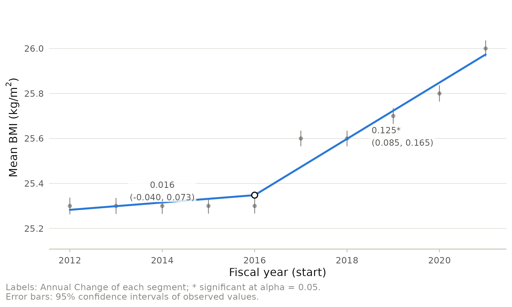
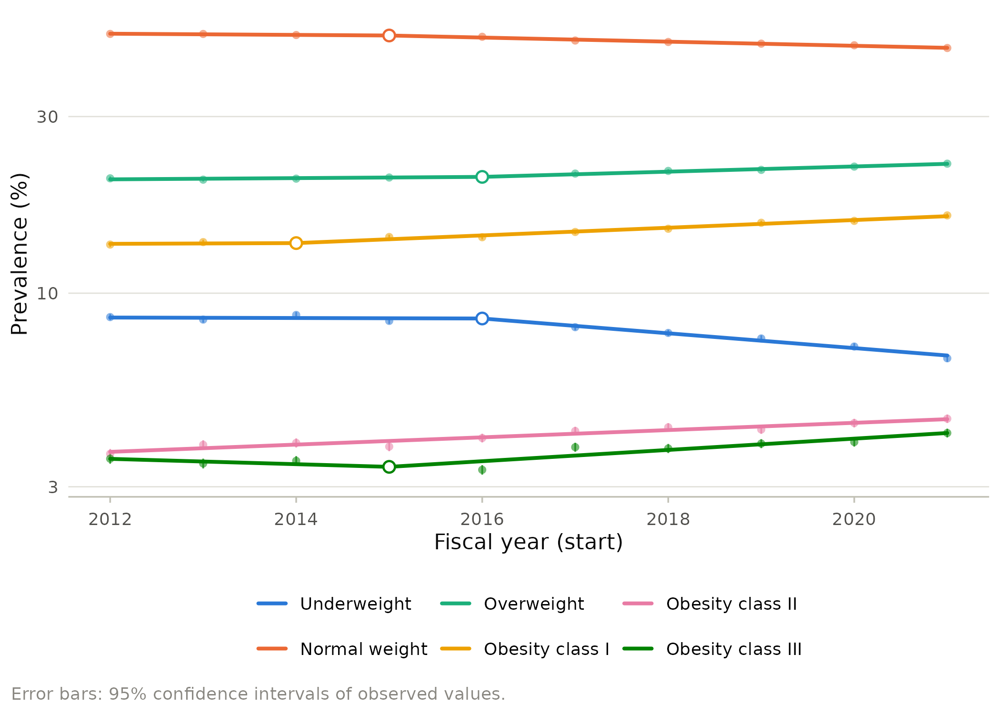
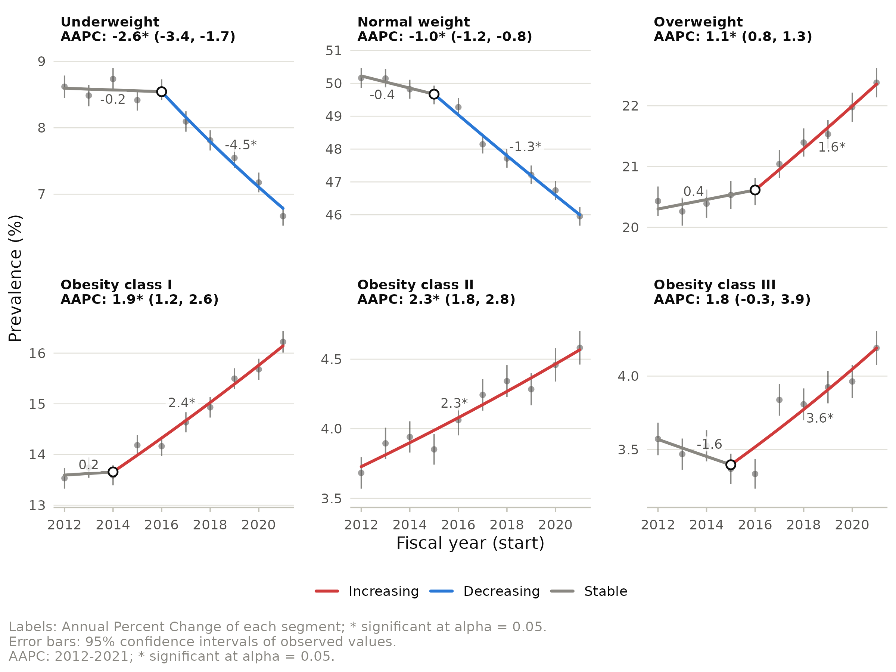

Reproducing a published analysis: prepregnancy BMI in Ontario
Source:vignettes/published-analysis.Rmd
published-analysis.RmdKhademioore and colleagues (2026, Canadian Journal of Public Health) studied the prepregnancy body mass index (BMI) of 1.17 million singleton births in Ontario from fiscal year 2012-2013 to 2021-2022. Among other analyses, they fitted a joinpoint regression model to the yearly mean BMI, selecting the number of joinpoints by BIC, and concluded that BMI was stable until 2016 and rose afterwards. Their Table 4 reports:
| Segment | Period | Slope (95% CI) | p |
|---|---|---|---|
| 1 | 2012-2016 | 0.016 (-0.035, 0.067) | 0.49 |
| 2 | 2016-2021 | 0.125 (0.088, 0.162) | < 0.001 |
with a joinpoint at 2016 (95% CI 2014-2019), a slope change of 0.109 per year (p = 0.010), and BIC values of 3.73, 2.93 and 3.33 for the models with 0, 1 and 2 joinpoints.
The article is open access (CC BY 4.0) and its appendix tabulates the
yearly data, which ship with the package as ontario_bmi.
This vignette reproduces the published analysis in R, draws a
publication figure in place of Figure 3, and extends the analysis to the
BMI categories. Figure 4 of the article, mean BMI by age group,
ethnicity and parity, cannot be reproduced because those yearly series
are not published.
The data
library(joinpoint)
library(ggplot2)
mb <- unique(ontario_bmi[c("year", "births", "mean_bmi", "sd_bmi")])
mb$se <- mb$sd_bmi / sqrt(mb$births)
mb
#> year births mean_bmi sd_bmi se
#> 1 2012 107457 25.3 6.2 0.01891361
#> 7 2013 113350 25.3 6.1 0.01811837
#> 13 2014 115375 25.3 6.1 0.01795866
#> 19 2015 118943 25.3 6.0 0.01739730
#> 25 2016 123328 25.3 6.0 0.01708521
#> 31 2017 121714 25.6 6.2 0.01777139
#> 37 2018 120177 25.6 6.2 0.01788467
#> 43 2019 119566 25.7 6.2 0.01793031
#> 49 2020 115034 25.8 6.2 0.01828010
#> 55 2021 116053 26.0 6.3 0.01849321The standard error of each yearly mean is the standard deviation divided by the square root of the number of births. Supplying it makes the fit weighted by the inverse squared standard errors.
The published model
The authors modeled mean BMI on its original scale, so the segments
are summarized by slopes in kg/m^2 per year rather than percent changes
(log = FALSE), and they selected the number of joinpoints
by BIC with at most two joinpoints. The article does not name its
interval method; the published intervals are symmetric around the
estimates, which points to parametric intervals.
fit <- joinpoint(mb, year, mean_bmi, se = se, log = FALSE, kmax = 2,
method = "bic", ci_method = "parametric")
fit
#> Joinpoint regression (linear model, se variance)
#> Model selection: BIC; confidence intervals: parametric
#>
#> Cohort: All
#> Joinpoints: 1 (2016)
#> 2012-2016 Slope = 0.016 [-0.040, 0.073]
#> 2016-2021 Slope = 0.125* [0.085, 0.165]
#> AAC Full Range (2012-2021) = 0.077* [0.051, 0.102]
#>
#> * Significantly different from zero at alpha = 0.05.The selection statistics, the slope change at the joinpoint and the joinpoint itself:
model_selection(fit)$criteria[, c("joinpoints", "sse", "bic", "selected")]
#> joinpoints sse bic selected
#> 1 0 263.69203 3.732714 FALSE
#> 2 1 74.52968 2.929646 TRUE
#> 3 2 70.32048 3.332029 FALSE
est <- model_estimates(fit)
est[est$parameter == "Slope 2 - Slope 1", c("estimate", "se", "p_value")]
#> estimate se p_value
#> 5 0.1087983 0.02688981 0.009863408
joinpoints(fit)
#> model final ci_method joinpoint estimate lower upper
#> 1 1 TRUE parametric 1 2016 2014 2017The interval of the joinpoint location contains the candidate years
whose best fit with the joinpoint there has a residual sum of squares
within Q (1 + k F / (n - p)) of the minimum Q
(Lerman 1980), with F the 95% quantile of the F
distribution on k and n - p degrees of
freedom. The published interval is wider. It matches the variant
Q (1 + k / (n - p)) F, which multiplies the whole bracket
by F and does not narrow as the series gets longer:
fit_lit <- joinpoint(mb, year, mean_bmi, se = se, log = FALSE, kmax = 2,
method = "bic", ci_method = "parametric",
control = jp_control(tau_interval = "literal"))
joinpoints(fit_lit)[, c("estimate", "lower", "upper")]
#> estimate lower upper
#> 1 2016 2014 2019Quantity by quantity, with the package values computed from the fits above:
| Quantity | Published | Package |
|---|---|---|
| BIC, 0 to 2 joinpoints | 3.73, 2.93, 3.33 | 3.73, 2.93, 3.33 |
| Joinpoint | 2016 | 2016 |
| Slopes | 0.016, 0.125 | 0.016, 0.125 |
| Segment p values | 0.49, < 0.001 | 0.49, < 0.001 |
| Slope change (p) | 0.109 (0.010) | 0.109 (0.010) |
| Slope 95% CIs | (-0.035, 0.067), (0.088, 0.162) | (-0.040, 0.073), (0.085, 0.165) |
| Joinpoint 95% CI | 2014-2019 | 2014-2017; variant 2014-2019 |
The selection, the joinpoint, the slopes, their p values and the slope change agree with Table 4. Two quantities do not:
- The published slope limits lie inside the package’s by about 0.005. They correspond to t quantiles on 7 to 8 degrees of freedom, while the published p values, like the package’s slope intervals and tests, use the 5 degrees of freedom of the separate segment regressions. The degrees of freedom of the published intervals are an inference; the article does not report them.
- The published joinpoint interval is reproduced by the conservative variant only.
Because the appendix rounds the yearly means to one decimal, the remaining digits cannot be checked further.
A better figure
The published Figure 3 shows the yearly means and the fitted segments. The same information, with the uncertainty of each yearly mean and the slope intervals written on the segments, makes a cleaner figure:
autoplot(fit, error_bars = TRUE, labels = "ci") +
labs(x = "Fiscal year (start)", y = expression("Mean BMI (kg/m"^2 * ")"))
jp_table() gives the manuscript table, including the
average annual change (AAC) over the full period, the linear model
counterpart of the AAPC:
| Trend | Period | Slope / AAC (95% CI) | p |
|---|---|---|---|
| Segment 1 | 2012-2016 | 0.016 (-0.040, 0.073) | 0.491 |
| Segment 2 | 2016-2021 | 0.125* (0.085, 0.165) | < 0.001 |
| AAC | 2012-2021 | 0.077* (0.051, 0.102) | < 0.001 |
Extending the analysis: BMI categories
A mean can hide shifts in the tails. The appendix also gives the
number of births in each World Health Organization category, so the
prevalence of each category can be analyzed with its binomial standard
error. With type = "percent", count and
population, joinpoint() computes the
percentages and their standard errors. A log-linear model summarizes
each period by the relative change in prevalence, the natural scale for
prevalences that differ by an order of magnitude.
fit_cat <- joinpoint(ontario_bmi, year, count = count, population = births,
by = "category", type = "percent", kmax = 2,
method = "bic", ci_method = "parametric")On a logarithmic axis the parallel shape of the obesity classes and the divergence of underweight and normal weight stand out:
autoplot(fit_cat, layout = "overlay", labels = "none", error_bars = TRUE,
log_y = TRUE) +
labs(x = "Fiscal year (start)", y = "Prevalence (%)")
Panels colored by trend direction show where each category turned:
autoplot(fit_cat, color_by = "trend", error_bars = TRUE, aapc = TRUE) +
labs(x = "Fiscal year (start)", y = "Prevalence (%)")
The overweight and underweight series turn in 2016, the year the mean turned, while obesity class I was already rising from 2014. Obesity class II rose steadily over the whole decade. The full set of trends:
| category | Trend | Period | APC / AAPC (95% CI) | p |
|---|---|---|---|---|
| Underweight | Segment 1 | 2012-2016 | -0.15 (-2.00, 1.73) | 0.844 |
| Underweight | Segment 2 | 2016-2021 | -4.50* (-5.82, -3.16) | < 0.001 |
| Underweight | AAPC | 2012-2021 | -2.59* (-3.43, -1.74) | < 0.001 |
| Normal weight | Segment 1 | 2012-2015 | -0.37 (-1.08, 0.34) | 0.239 |
| Normal weight | Segment 2 | 2015-2021 | -1.27* (-1.51, -1.03) | < 0.001 |
| Normal weight | AAPC | 2012-2021 | -0.97* (-1.19, -0.75) | < 0.001 |
| Overweight | Segment 1 | 2012-2016 | 0.38 (-0.19, 0.96) | 0.148 |
| Overweight | Segment 2 | 2016-2021 | 1.64* (1.25, 2.03) | < 0.001 |
| Overweight | AAPC | 2012-2021 | 1.08* (0.82, 1.33) | < 0.001 |
| Obesity class I | Segment 1 | 2012-2014 | 0.23 (-3.52, 4.13) | 0.883 |
| Obesity class I | Segment 2 | 2014-2021 | 2.42* (1.94, 2.90) | < 0.001 |
| Obesity class I | AAPC | 2012-2021 | 1.93* (1.21, 2.65) | < 0.001 |
| Obesity class II | Segment 1 | 2012-2021 | 2.28* (1.79, 2.78) | < 0.001 |
| Obesity class II | AAPC | 2012-2021 | 2.28* (1.79, 2.78) | < 0.001 |
| Obesity class III | Segment 1 | 2012-2015 | -1.64 (-8.19, 5.37) | 0.564 |
| Obesity class III | Segment 2 | 2015-2021 | 3.57* (1.34, 5.85) | 0.009 |
| Obesity class III | AAPC | 2012-2021 | 1.80 (-0.28, 3.93) | 0.091 |
References
Khademioore S, Darling EK, D’Souza R, Muraca GM, Guo Y, Anderson LN (2026). Prepregnancy body mass index in Ontario from 2012 to 2022: a population-based descriptive study. Canadian Journal of Public Health. doi:10.17269/s41997-026-01214-w
Lerman PM (1980). Fitting segmented regression models by grid search. Journal of the Royal Statistical Society, Series C 29:77-84.